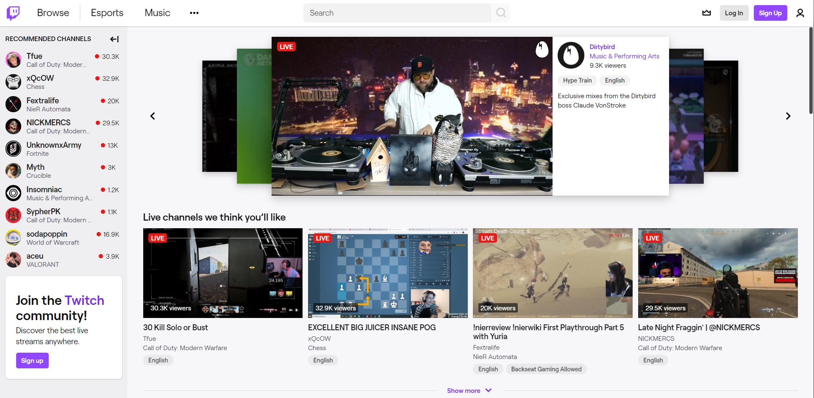

SEG3125 Lab 1

The first image is the default twitch view, the second picture is the view once you are signed in and with darkmode on
Do you like the fact that the first stream in the recommended streams carousel at the top automatically starts playing when you enter the site?
Yes
No
Which of the following additions would you like to see added to Twitch? (select all that apply)
A live preview of the streams my friends are watching
The ability to search for streams based on tags (for example English, IRL, FPS, etc.)
The ability to remove recommended channels and only be shown the channels you are following
A darkmode/lightmode toggle button
Which of the following additions would you like to see added to Twitch? (select all that apply)
A live preview of the streams my friends are watching
The ability to search for streams based on tags (for example English, IRL, FPS, etc.)
The ability to remove recommended channels and only be shown the channels you are following
A darkmode/lightmode toggle button
Agree/Disagree: having both a recommended channel carousel at the top of the page as well as a recommended channels section is redundant
Neutral
Submit